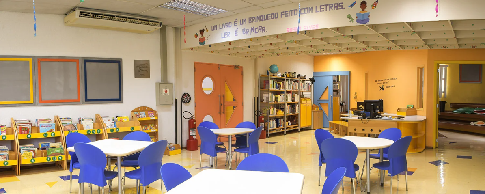

Bibliotecas
O Colégio Tereza Delta disponibiliza quatro bibliotecas interativas, montadas especialmente para atender alunos de diferentes faixas etárias.
Sua missão é contribuir com o processo de ensino-aprendizagem através da mediação infoeducacional, bem como promover a construção das autonomias relativas ao acesso, organização e uso dos diferentes dispositivos informacionais.
Os recursos informacionais disponíveis são compostos por material impresso, digital, audiovisual, multimídia, equipamentos eletrônicos e artefatos tridimensionais, organizados de forma que os usuários tenham livre acesso para explorar todo o acervo.
A base de dados da Biblioteca está disponível em diferentes terminais de consulta, com possibilidade de conexão em rede e os computadores ligados à Internet permitem que os alunos transitem pelos diferentes meios de informação. Nas séries iniciais, os alunos são orientados quanto ao uso correto da biblioteca e seus serviços. Quanto ao tratamento dos documentos, são utilizados padrões internacionais de manutenção e arquivamento, porém, com adaptações que visam a atender às especificidades e necessidades dos diferentes públicos das bibliotecas.
O acervo é atualizado periodicamente e a comunidade acadêmica (diretores, coordenadores, professores, alunos e funcionários) participa da seleção do acervo, de acordo com o procedimento vigente.



Laboratório
No colégio, todos os alunos contam com laboratórios equipados com tecnologia de última geração. Destacam-se os laboratórios de Química, Biologia, Idiomas e Física, além dos laboratórios de informática e de mecânica.
Espaços esportivos
• Estádio Olímpico Bronze TM 23: é um complexo esportivo composto por um campo de futebol com gramado natural, pista de atletismo e arquibancada coberta que pode acomodar aproximadamente 1.050 pessoas sentadas. Além disso, na parte inferior da arquibancada, existem vestiários para os atletas e árbitros, banheiros para os espectadores, bebedouro e uma sala de musculação. O campo de futebol possui dimensões oficiais (100m de comprimento por 56m de largura) com características similares às dos mais modernos estádios brasileiros, no que diz respeito ao tipo de grama utilizada, sistema de irrigação, drenagem e iluminação para a prática de esportes no período noturno. A manutenção do campo é feita diariamente, além dos cuidados tomados durante as aulas, como, por exemplo, a utilização de uma lona para proteger a pequena área (área de meta), de modo a preservar o gramado nesse local. Ao redor do campo existe uma pista de atletismo com 350 metros de comprimento e 6 raias,
tendo a reta principal disponibilidade para abrigar provas de 100m e 110m rasos com até 8 raias. Além da pista para as provas de corrida, há outra para a prática das modalidades de salto em distância e salto triplo.
• Conjunto Aquático: é composto por duas piscinas, sendo uma semiolímpica, com 25 metros de comprimento, 1,40m a 1,80m de profundidade e seis raias. Nesta, a temperatura da água varia entre 28 e 30 graus. A outra, infantil, com 14 metros de comprimento, tem 1,40m de profundidade, sendo que é possível a utilização de plataformas de redução de profundidade, chegando a 0,80m. Ela possui quatro raias e a temperatura da água varia entre 30 e 32 graus. Além das piscinas, a instalação conta com dois amplos vestiários e um espaço externo descoberto, suficiente para a realização de exercícios motores para a complementação do trabalho de técnica, força e flexibilidade realizados em água.